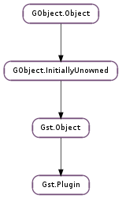

| static | list_free(list) |
| static | load_by_name(name) |
| static | load_file(filename) |
| static | register_static(major_version, minor_version, name, description, init_func, version, license, source, ...) |
| static | register_static_full(major_version, minor_version, name, description, init_full_func, version, license, source, ...) |
| add_dependency(env_vars, paths, names, flags) | |
| add_dependency_simple(env_vars, paths, names, flags) | |
| get_cache_data() | |
| get_description() | |
| get_filename() | |
| get_license() | |
| get_name() | |
| get_origin() | |
| get_package() | |
| get_release_date_string() | |
| get_source() | |
| get_version() | |
| is_loaded() | |
| load() | |
| set_cache_data(cache_data) |
None
None
Bases: Gst.Object
GStreamer is extensible, so Gst.Element instances can be loaded at runtime. A plugin system can provide one or more of the basic GStreamer Gst.PluginFeature subclasses.
A plugin should export a symbol gst_plugin_desc that is a struct of type Gst.PluginDesc. the plugin loader will check the version of the core library the plugin was linked against and will create a new Gst.Plugin. It will then call the Gst.PluginInitFunc function that was provided in the gst_plugin_desc.
Once you have a handle to a Gst.Plugin (e.g. from the Gst.Registry ), you can add any object that subclasses Gst.PluginFeature.
Usually plugins are always automaticlly loaded so you don’t need to call Gst.Plugin.load () explicitly to bring it into memory. There are options to statically link plugins to an app or even use GStreamer without a plugin repository in which case Gst.Plugin.load () can be needed to bring the plugin into memory.
| Parameters: | list ([Gst.Plugin]) – list of Gst.Plugin |
|---|
Unrefs each member of list, then frees the list.
| Parameters: | name (str) – name of plugin to load |
|---|---|
| Returns: | a reference to a loaded plugin, or None on error. |
| Return type: | Gst.Plugin |
Load the named plugin. Refs the plugin.
| Parameters: | filename (str) – the plugin filename to load |
|---|---|
| Raises: | GLib.GError |
| Returns: | a reference to the existing loaded Gst.Plugin, a reference to the newly-loaded Gst.Plugin, or None if an error occurred. |
| Return type: | Gst.Plugin |
Loads the given plugin and refs it. Caller needs to unref after use.
| Parameters: |
|
|---|---|
| Returns: | True if the plugin was registered correctly, otherwise False. |
| Return type: |
Registers a static plugin, ie. a plugin which is private to an application or library and contained within the application or library (as opposed to being shipped as a separate module file).
You must make sure that GStreamer has been initialised (with Gst.init () or via Gst.init_get_option_group ()) before calling this function.
| Parameters: |
|
|---|---|
| Returns: | True if the plugin was registered correctly, otherwise False. |
| Return type: |
Registers a static plugin, ie. a plugin which is private to an application or library and contained within the application or library (as opposed to being shipped as a separate module file) with a Gst.PluginInitFullFunc which allows user data to be passed to the callback function (useful for bindings).
You must make sure that GStreamer has been initialised (with Gst.init () or via Gst.init_get_option_group ()) before calling this function.
| Parameters: |
|
|---|
Make GStreamer aware of external dependencies which affect the feature set of this plugin (ie. the elements or typefinders associated with it).
GStreamer will re-inspect plugins with external dependencies whenever any of the external dependencies change. This is useful for plugins which wrap other plugin systems, e.g. a plugin which wraps a plugin-based visualisation library and makes visualisations available as GStreamer elements, or a codec loader which exposes elements and/or caps dependent on what external codec libraries are currently installed.
| Parameters: |
|
|---|
Make GStreamer aware of external dependencies which affect the feature set of this plugin (ie. the elements or typefinders associated with it).
GStreamer will re-inspect plugins with external dependencies whenever any of the external dependencies change. This is useful for plugins which wrap other plugin systems, e.g. a plugin which wraps a plugin-based visualisation library and makes visualisations available as GStreamer elements, or a codec loader which exposes elements and/or caps dependent on what external codec libraries are currently installed.
Convenience wrapper function for Gst.Plugin.add_dependency () which takes simple strings as arguments instead of string arrays, with multiple arguments separated by predefined delimiters (see above).
| Returns: | The cached data as a Gst.Structure or None. |
|---|---|
| Return type: | Gst.Structure |
Gets the plugin specific data cache. If it is None there is no cached data stored. This is the case when the registry is getting rebuilt.
| Returns: | the long name of the plugin |
|---|---|
| Return type: | str |
Get the long descriptive name of the plugin
| Returns: | the origin of the plugin |
|---|---|
| Return type: | str |
get the URL where the plugin comes from
| Returns: | the package of the plugin |
|---|---|
| Return type: | str |
get the package the plugin belongs to.
| Returns: | the date string of the plugin, or None if not available. |
|---|---|
| Return type: | str |
Get the release date (and possibly time) in form of a string, if available.
For normal GStreamer plugin releases this will usually just be a date in the form of “YYYY-MM-DD”, while pre-releases and builds from git may contain a time component after the date as well, in which case the string will be formatted like “YYYY-MM-DDTHH:MMZ” (e.g. “2012-04-30T09:30Z”).
There may be plugins that do not have a valid release date set on them.
| Returns: | the source of the plugin |
|---|---|
| Return type: | str |
get the source module the plugin belongs to.
| Returns: | True is loaded, False otherwise |
|---|---|
| Return type: | bool |
queries if the plugin is loaded into memory
| Returns: | a reference to a loaded plugin, or None on error. |
|---|---|
| Return type: | Gst.Plugin |
Loads plugin. Note that the *return value* is the loaded plugin; plugin is untouched. The normal use pattern of this function goes like this:
GstPlugin *loaded_plugin;
loaded_plugin = gst_plugin_load (plugin);
// presumably, we're no longer interested in the potentially-unloaded plugin
gst_object_unref (plugin);
plugin = loaded_plugin;
| Parameters: | cache_data (Gst.Structure) – a structure containing the data to cache |
|---|
Adds plugin specific data to cache. Passes the ownership of the structure to the plugin.
The cache is flushed every time the registry is rebuilt.